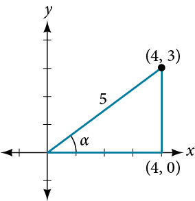
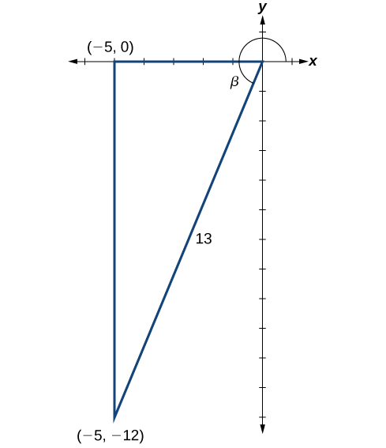
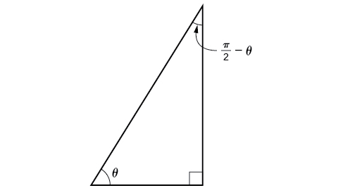
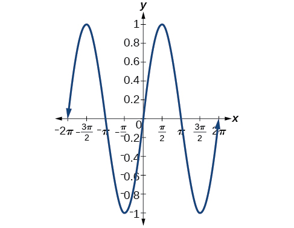
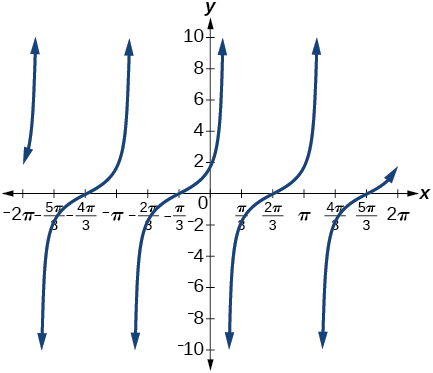

Sum and Difference Identities

How can the height of a mountain be measured? What about the distance from Earth to the sun? Like many seemingly impossible problems, we rely on mathematical formulas to find the answers. The trigonometric identities, commonly used in mathematical proofs, have had real-world applications for centuries, including their use in calculating long distances.
The trigonometric identities we will examine in this section can be traced to a Persian astronomer who lived around 950 AD, but the ancient Greeks discovered these same formulas much earlier and stated them in terms of chords. These are special equations or postulates, true for all values input to the equations, and with innumerable applications.
In this section, we will learn techniques that will enable us to solve problems such as the ones presented above. The formulas that follow will simplify many trigonometric expressions and equations. Keep in mind that, throughout this section, the term formula is used synonymously with the word identity.
Using the Sum and Difference Formulas for Cosine
Finding the exact value of the sine, cosine, or tangent of an angle is often easier if we can rewrite the given angle in terms of two angles that have known trigonometric values. We can use the special angles, which we can review in the unit circle shown in Figure 2.
![Diagram of the unit circle with points labeled on its edge. P point is at an angle a from the positive x axis with coordinates (cosa, sina). Point Q is at an angle of B from the positive x axis with coordinates (cosb, sinb). Angle POQ is a - B degrees. Point A is at an angle of (a-B) from the x axis with coordinates (cos(a-B), sin(a-B)). Point B is just at point (1,0). Angle AOB is also a - B degrees. Radii PO, AO, QO, and BO are all 1 unit long and are the legs of triangles POQ and AOB. Triangle POQ is a rotation of triangle AOB, so the distance from P to Q is the same as the distance from A to B.](../../media/CNX_Precalc_Figure_07_01_004-93aa.jpg)
We will begin with the sum and difference formulas for cosine, so that we can find the cosine of a given angle if we can break it up into the sum or difference of two of the special angles. See Table 1.
| Sum formula for cosine | |
| Difference formula for cosine |
First, we will prove the difference formula for cosines. Let’s consider two points on the unit circle. See Figure 3. Point is at an angle from the positive x-axis with coordinates and point is at an angle of from the positive x-axis with coordinates Note the measure of angle is
Label two more points: at an angle of from the positive x-axis with coordinates and point with coordinates Triangle is a rotation of triangle and thus the distance from to is the same as the distance from to
![Diagram of the unit circle with points labeled on its edge. P point is at an angle a from the positive x axis with coordinates (cosa, sina). Point Q is at an angle of B from the positive x axis with coordinates (cosb, sinb). Angle POQ is a - B degrees. Point A is at an angle of (a-B) from the x axis with coordinates (cos(a-B), sin(a-B)). Point B is just at point (1,0). Angle AOB is also a - B degrees. Radii PO, AO, QO, and BO are all 1 unit long and are the legs of triangles POQ and AOB. Triangle POQ is a rotation of triangle AOB, so the distance from P to Q is the same as the distance from A to B.](../../media/CNX_Precalc_Figure_07_02_002.jpg)
We can find the distance from to using the distance formula.
Then we apply the Pythagorean Identity and simplify.
Similarly, using the distance formula we can find the distance from to
Applying the Pythagorean Identity and simplifying we get:
Because the two distances are the same, we set them equal to each other and simplify.
Finally we subtract from both sides and divide both sides by
Thus, we have the difference formula for cosine. We can use similar methods to derive the cosine of the sum of two angles.
Finding the Exact Value Using the Formula for the Cosine of the Difference of Two Angles
Using the formula for the cosine of the difference of two angles, find the exact value of
Solution
Use the formula for the cosine of the difference of two angles. We have
Finding the Exact Value Using the Formula for the Sum of Two Angles for Cosine
Find the exact value of
Solution
As we can evaluate as Thus,
Using the Sum and Difference Formulas for Sine
The sum and difference formulas for sine can be derived in the same manner as those for cosine, and they resemble the cosine formulas.
Using Sum and Difference Identities to Evaluate the Difference of Angles
Use the sum and difference identities to evaluate the difference of the angles and show that part a equals part b.
- ⓐ
- ⓑ
Solution
- ⓐ Let’s begin by writing the formula and substitute the given angles.
Next, we need to find the values of the trigonometric expressions.
Now we can substitute these values into the equation and simplify.
- ⓑ Again, we write the formula and substitute the given angles.
Next, we find the values of the trigonometric expressions.
Now we can substitute these values into the equation and simplify.
Finding the Exact Value of an Expression Involving an Inverse Trigonometric Function
Find the exact value of
Solution
The pattern displayed in this problem is Let and Then we can write
We will use the Pythagorean Identities to find and
Using the sum formula for sine,
Using the Sum and Difference Formulas for Tangent
Finding exact values for the tangent of the sum or difference of two angles is a little more complicated, but again, it is a matter of recognizing the pattern.
Finding the sum of two angles formula for tangent involves taking quotient of the sum formulas for sine and cosine and simplifying. Recall,
Let’s derive the sum formula for tangent.
We can derive the difference formula for tangent in a similar way.
Finding the Exact Value of an Expression Involving Tangent
Find the exact value of
Solution
Let’s first write the sum formula for tangent and substitute the given angles into the formula.
Next, we determine the individual tangents within the formula:
So we have
Finding Multiple Sums and Differences of Angles
Given find
- ⓐ
- ⓑ
- ⓒ
- ⓓ
Solution
We can use the sum and difference formulas to identify the sum or difference of angles when the ratio of sine, cosine, or tangent is provided for each of the individual angles. To do so, we construct what is called a reference triangle to help find each component of the sum and difference formulas.
- ⓐ
To find we begin with and The side opposite has length 3, the hypotenuse has length 5, and is in the first quadrant. See Figure 4. Using the Pythagorean Theorem, we can find the length of side

Figure 4 Since and the side adjacent to is the hypotenuse is 13, and is in the third quadrant. See Figure 5. Again, using the Pythagorean Theorem, we have
Since is in the third quadrant,

Figure 5 The next step is finding the cosine of and the sine of The cosine of is the adjacent side over the hypotenuse. We can find it from the triangle in Figure 5: We can also find the sine of from the triangle in Figure 5, as opposite side over the hypotenuse: Now we are ready to evaluate
- ⓑ We can find in a similar manner. We substitute the values according to the formula.
- ⓒ For if and then
If and then
Then,
- ⓓ To find we have the values we need. We can substitute them in and evaluate.
Using Sum and Difference Formulas for Cofunctions
Now that we can find the sine, cosine, and tangent functions for the sums and differences of angles, we can use them to do the same for their cofunctions. You may recall from Right Triangle Trigonometry that, if the sum of two positive angles is those two angles are complements, and the sum of the two acute angles in a right triangle is so they are also complements. In Figure 6, notice that if one of the acute angles is labeled as then the other acute angle must be labeled
Notice also that opposite over hypotenuse. Thus, when two angles are complementary, we can say that the sine of equals the cofunction of the complement of Similarly, tangent and cotangent are cofunctions, and secant and cosecant are cofunctions.

From these relationships, the cofunction identities are formed.
Notice that the formulas in the table may also be justified algebraically using the sum and difference formulas. For example, using
we can write
Finding a Cofunction with the Same Value as the Given Expression
Write in terms of its cofunction.
Solution
The cofunction of Thus,
Using the Sum and Difference Formulas to Verify Identities
Verifying an identity means demonstrating that the equation holds for all values of the variable. It helps to be very familiar with the identities or to have a list of them accessible while working the problems. Reviewing the general rules from Simplifying and Verifying Trigonometric Identities may help simplify the process of verifying an identity.
Verifying an Identity Involving Sine
Verify the identity
Solution
We see that the left side of the equation includes the sines of the sum and the difference of angles.
We can rewrite each using the sum and difference formulas.
We see that the identity is verified.
Verifying an Identity Involving Tangent
Verify the following identity.
Solution
We can begin by rewriting the numerator on the left side of the equation.
We see that the identity is verified. In many cases, verifying tangent identities can successfully be accomplished by writing the tangent in terms of sine and cosine.
Using Sum and Difference Formulas to Solve an Application Problem
Let and denote two non-vertical intersecting lines, and let denote the acute angle between and See Figure 7. Show that
where and are the slopes of and respectively. (Hint: Use the fact that and )

Solution
Using the difference formula for tangent, this problem does not seem as daunting as it might.
Investigating a Guy-wire Problem
For a climbing wall, a guy-wire is attached 47 feet high on a vertical pole. Added support is provided by another guy-wire attached 40 feet above ground on the same pole. If the wires are attached to the ground 50 feet from the pole, find the angle between the wires. See Figure 8.

Solution
Let’s first summarize the information we can gather from the diagram. As only the sides adjacent to the right angle are known, we can use the tangent function. Notice that and We can then use difference formula for tangent.
Now, substituting the values we know into the formula, we have
Use the distributive property, and then simplify the functions.
Now we can calculate the angle in degrees.
Analysis
Occasionally, when an application appears that includes a right triangle, we may think that solving is a matter of applying the Pythagorean Theorem. That may be partially true, but it depends on what the problem is asking and what information is given.
Key Equations
| Sum Formula for Cosine | |
| Difference Formula for Cosine | |
| Sum Formula for Sine | |
| Difference Formula for Sine | |
| Sum Formula for Tangent | |
| Difference Formula for Tangent | |
| Cofunction identities |
Key Concepts
- The sum formula for cosines states that the cosine of the sum of two angles equals the product of the cosines of the angles minus the product of the sines of the angles. The difference formula for cosines states that the cosine of the difference of two angles equals the product of the cosines of the angles plus the product of the sines of the angles.
- The sum and difference formulas can be used to find the exact values of the sine, cosine, or tangent of an angle. See Example 1 and Example 2.
- The sum formula for sines states that the sine of the sum of two angles equals the product of the sine of the first angle and cosine of the second angle plus the product of the cosine of the first angle and the sine of the second angle. The difference formula for sines states that the sine of the difference of two angles equals the product of the sine of the first angle and cosine of the second angle minus the product of the cosine of the first angle and the sine of the second angle. See Example 3.
- The sum and difference formulas for sine and cosine can also be used for inverse trigonometric functions. See Example 4.
- The sum formula for tangent states that the tangent of the sum of two angles equals the sum of the tangents of the angles divided by 1 minus the product of the tangents of the angles. The difference formula for tangent states that the tangent of the difference of two angles equals the difference of the tangents of the angles divided by 1 plus the product of the tangents of the angles. See Example 5.
- The Pythagorean Theorem along with the sum and difference formulas can be used to find multiple sums and differences of angles. See Example 6.
- The cofunction identities apply to complementary angles and pairs of reciprocal functions. See Example 7.
- Sum and difference formulas are useful in verifying identities. See Example 8 and Example 9.
- Application problems are often easier to solve by using sum and difference formulas. See Example 10 and Example 11.
Section Exercises
Verbal
Explain the basis for the cofunction identities and when they apply.
Solution
The cofunction identities apply to complementary angles. Viewing the two acute angles of a right triangle, if one of those angles measures the second angle measures Then The same holds for the other cofunction identities. The key is that the angles are complementary.
Is there only one way to evaluate Explain how to set up the solution in two different ways, and then compute to make sure they give the same answer.
Explain to someone who has forgotten the even-odd properties of sinusoidal functions how the addition and subtraction formulas can determine this characteristic for and (Hint: )
Solution
so is odd. so is even.
Algebraic
For the following exercises, find the exact value.
Solution
Solution
Solution
For the following exercises, rewrite in terms of and
Solution
Solution
For the following exercises, simplify the given expression.
Solution
Solution
Solution
For the following exercises, find the requested information.
Given that and with and both in the interval find and
Given that and with and both in the interval find and
Solution
For the following exercises, find the exact value of each expression.
Solution
Graphical
For the following exercises, simplify the expression, and then graph both expressions as functions to verify the graphs are identical.
Solution

Solution

Solution

Solution

For the following exercises, use a graph to determine whether the functions are the same or different. If they are the same, show why. If they are different, replace the second function with one that is identical to the first. (Hint: think )
,
Solution
They are the same.
,
Solution
They are the different, try
,
,
Solution
They are the same.
,
,
Solution
They are the different, try
,
,
Solution
They are different, try
Technology
For the following exercises, find the exact value algebraically, and then confirm the answer with a calculator to the fourth decimal point.
Solution
Solution
or 0.9659
Extensions
For the following exercises, prove the identities provided.
Solution
Solution
Solution
For the following exercises, prove or disprove the statements.
Solution
True
If and are angles in the same triangle, then prove or disprove
Solution
True. Note that and expand the right hand side.
If and are angles in the same triangle, then prove or disprove
Analysis
A common mistake when addressing problems such as this one is that we may be tempted to think that and are angles in the same triangle, which of course, they are not. Also note that